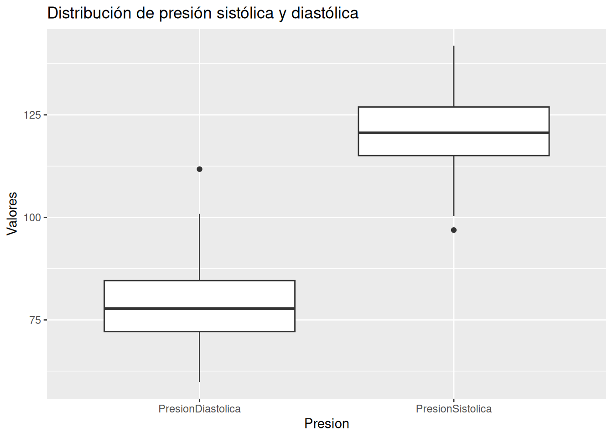
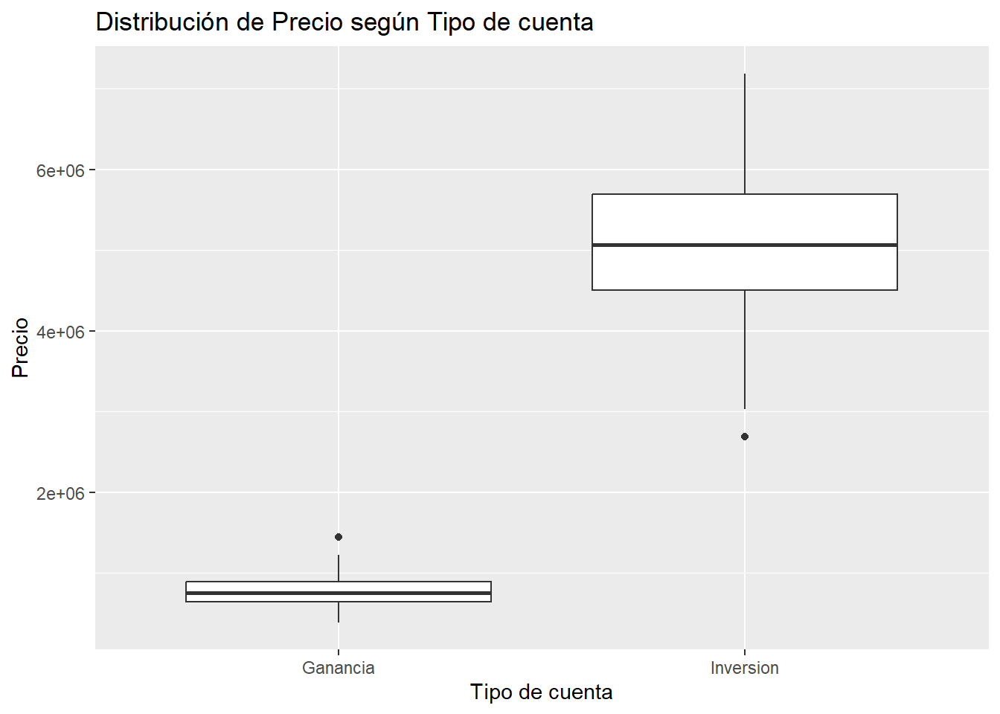

Chapter 2 Análisis paramétrico y no paramétrico
2.2 4.1 Presión arterial: carga y EDA
Se cargan los datos de presión sistólica y diastólica.
## Presion Valores
## Length:200 Min. : 59.88
## Class :character 1st Qu.: 77.84
## Mode :character Median :100.72
## Mean : 99.93
## 3rd Qu.:120.57
## Max. :141.87Sin valores faltantes, con 100 mediciones por tipo de presión.
Se transforma la variable Presion a factor y se separan los valores de presión sistólica y diastólica en vectores independientes.
df$Presion <- factor(df$Presion)
dfs <- df %>%
filter(Presion == "PresionSistolica") %>%
pull(Valores)
dfd <- df %>%
filter(Presion == "PresionDiastolica") %>%
pull(Valores)Resumen estadístico de ambos grupos.
df %>%
group_by(Presion) %>%
summarise(n = length(Valores),
prom = mean(Valores),
ds = sd(Valores),
mediana = median(Valores),
RIC = IQR(Valores),
min = min(Valores),
max = max(Valores),
curtosis = kurtosis(Valores),
Coef_asim = skewness(Valores))## # A tibble: 2 × 10
## Presion n prom ds mediana RIC min max curtosis Coef_asim
## <fct> <int> <dbl> <dbl> <dbl> <dbl> <dbl> <dbl> <dbl> <dbl>
## 1 PresionDiastolica 100 78.9 9.48 77.8 12.4 59.9 112. 3.66 0.639
## 2 PresionSistolica 100 121. 9.13 121. 11.9 96.9 142. 2.84 0.0605Presión Sistólica: Se registraron un total de 100 mediciones de presión sistólica. En promedio, la presión sistólica es de aproximadamente 121 mmHg (con una desviación estándar de 9.13 mmHg). Por otro lado, el 50% de los pacientes registran una presión sistólica de a lo sumo 121 mmHg, con un rango intercuartílico de 11.9 mmHg, siendo el valor más bajo registrado de 96.9 mmHg y el más alto de 142 mmHg. Si visualizamos los datos, su forma es ligeramente platicúrtica (curtosis = 2.84, menor a 3), es decir, se evidencia una distribución algo más aplanada que la normal, con colas más livianas. Además, con un coeficiente de asimetría muy cercano a cero (0.0605), la distribución es prácticamente simétrica, sin un sesgo relevante hacia ninguno de los dos extremos.
Presión Diastólica: Se registraron un total de 100 mediciones de presión diastólica. En promedio, la presión diastólica es de aproximadamente 78.9 mmHg (con una desviación estándar de 9.48 mmHg). Por otro lado, el 50% de los pacientes registran una presión diastólica de a lo sumo 77.8 mmHg, con un rango intercuartílico de 12.4 mmHg, siendo el valor más bajo registrado de 59.9 mmHg y el más alto de 112 mmHg. Si visualizamos los datos, su forma es ligeramente leptocúrtica (curtosis = 3.66, mayor a 3), es decir, se evidencia una distribución algo más apuntada que la normal, con colas más pesadas. Además, con un coeficiente de asimetría de 0.639, se observa una asimetría o sesgo moderado hacia la derecha, lo que indica la presencia de algunos valores de presión diastólica relativamente altos respecto a la mayoría de los pacientes.
Visualización mediante boxplot.
df %>%
ggplot(aes(x = Presion, y = Valores)) +
geom_boxplot() +
labs(title = "Distribución de presión sistólica y diastólica")
El boxplot muestra que la presión sistólica es consistentemente más alta que la diastólica, con una mediana cercana a 120 mmHg frente a 78 mmHg, lo cual es fisiológicamente esperado. La dispersión (rango intercuartílico) es similar entre ambos grupos, sin diferencias marcadas en variabilidad. Se observa un valor atípico en cada grupo: uno alto en la diastólica (~112 mmHg) y uno bajo en la sistólica (~98 mmHg), que podrían corresponder a casos particulares a revisar. Ambas cajas lucen razonablemente simétricas, consistente con los coeficientes de asimetría calculados previamente.
2.3 Supuesto de normalidad (presión)
Ho: x ~ N(μ, σ²) vs Ha: x !~ N(μ, σ²)
##
## Asymptotic one-sample Kolmogorov-Smirnov test
##
## data: dfs
## D = 0.058097, p-value = 0.8884
## alternative hypothesis: two-sided##
## Asymptotic one-sample Kolmogorov-Smirnov test
##
## data: dfd
## D = 0.057927, p-value = 0.8905
## alternative hypothesis: two-sidedEl test de KS no rechaza la normalidad en la sistólica (p > 0.05) y sí la rechaza en la diastólica (p < 0.05), coherente con su sesgo positivo y leptocurtosis.
2.4 Homocedasticidad: razón de varianzas
##
## F test to compare two variances
##
## data: dfs and dfd
## F = 0.92784, num df = 99, denom df = 99, p-value = 0.7102
## alternative hypothesis: true ratio of variances is not equal to 1
## 95 percent confidence interval:
## 0.6242897 1.3789878
## sample estimates:
## ratio of variances
## 0.9278405F ≈ 0.93, p > 0.05: no se rechaza la igualdad de varianzas, condición que habilita el t-test con varianza combinada.
Verificación manual, paso a paso, del teorema de la razón de varianzas.
n1 <- length(dfs)
n2 <- length(dfd)
s1_2 <- var(dfs)
s2_2 <- var(dfd)
F_manual <- s1_2 / s2_2
df1 <- n1 - 1
df2 <- n2 - 1
p_valor_F <- 2 * min(pf(F_manual, df1, df2), 1 - pf(F_manual, df1, df2))
IC_inf_F <- (s1_2 / s2_2) * (1 / qf(0.975, df1, df2))
IC_sup_F <- (s1_2 / s2_2) * (1 / qf(0.025, df1, df2))
F_manual; df1; df2; p_valor_F## [1] 0.9278405## [1] 99## [1] 99## [1] 0.7101778## [1] 0.6242897 1.3789878Los valores coinciden con la salida de var.test.
2.5 Diferencia de medias, varianzas iguales
##
## Two Sample t-test
##
## data: dfs and dfd
## t = 31.888, df = 198, p-value < 2.2e-16
## alternative hypothesis: true difference in means is not equal to 0
## 95 percent confidence interval:
## 39.36328 44.55275
## sample estimates:
## mean of x mean of y
## 120.90406 78.94604t(198) ≈ 33, p < 0.001: la diferencia sistólica–diastólica (~42 mmHg) es estadísticamente significativa.
Verificación manual, paso a paso, del teorema de la diferencia de medias con varianza combinada.
media1 <- mean(dfs)
media2 <- mean(dfd)
Sp2 <- ((n1 - 1) * s1_2 + (n2 - 1) * s2_2) / (n1 + n2 - 2)
t_manual <- (media1 - media2) / sqrt(Sp2 * (1/n1 + 1/n2))
df_t <- n1 + n2 - 2
p_valor_t <- 2 * (1 - pt(abs(t_manual), df_t))
IC_inf_t <- (media1 - media2) - qt(0.975, df_t) * sqrt(Sp2 * (1/n1 + 1/n2))
IC_sup_t <- (media1 - media2) + qt(0.975, df_t) * sqrt(Sp2 * (1/n1 + 1/n2))
t_manual; df_t; p_valor_t## [1] 31.88841## [1] 198## [1] 0## [1] 39.36328 44.55275Coincide con la salida de t.test.
2.6 Diferencia de medias con distribución normal (z)
##
## Two-sample z-Test
##
## data: dfs and dfd
## z = 31.888, p-value < 2.2e-16
## alternative hypothesis: true difference in means is not equal to 0
## 95 percent confidence interval:
## 39.37914 44.53689
## sample estimates:
## mean of x mean of y
## 120.90406 78.94604El z-test replica el t-test (z ≈ 32, p < 0.001), resultado esperado con n = 100 por el teorema del límite central.
Verificación manual aplicando el mismo teorema pero con distribución normal en vez de t. Dada la ley de los grandes números, con n1=n2=100 se obtienen resultados prácticamente iguales al t-test.
SE_z <- sqrt(s1_2/n1 + s2_2/n2)
z_manual <- (media1 - media2) / SE_z
p_valor_z <- 2 * (1 - pnorm(abs(z_manual)))
IC_inf_z <- (media1 - media2) - qnorm(0.975) * SE_z
IC_sup_z <- (media1 - media2) + qnorm(0.975) * SE_z
z_manual; p_valor_z## [1] 31.88841## [1] 0## [1] 39.37914 44.53689Coincide con la salida de z.test.
2.7 Tamaño del efecto (presión)
##
## Cohen's d
##
## d estimate: 4.509702 (large)
## 95 percent confidence interval:
## lower upper
## 3.984821 5.034583d ≈ 4.7: efecto enorme, la diferencia equivale a casi cinco desviaciones estándar.
2.8 Objetivo 2: precio según tipo de cuenta (Inversión vs Ganancia)
Ho: μ(ganancias) = μ(inversion) vs Ha: μ(ganancias) != μ(inversion)
df <- read_excel("Data/datos_economia.xlsx")
df$`Tipo de cuenta` <- factor(df$`Tipo de cuenta`)
summary(df)## Tipo de cuenta Precio
## Ganancia :100 Min. : 389351
## Inversion:100 1st Qu.: 755879
## Median :2069520
## Mean :2934448
## 3rd Qu.:5057380
## Max. :7187333100 precios por tipo de cuenta, con la variable codificada como factor.
Resumen estadístico.
df %>%
group_by(`Tipo de cuenta`) %>%
summarise(n = length(Precio),
prom = mean(Precio),
ds = sd(Precio),
mediana = median(Precio),
RIC = IQR(Precio),
min = min(Precio),
max = max(Precio),
curtosis = kurtosis(Precio),
Coef_asim = skewness(Precio))## # A tibble: 2 × 10
## `Tipo de cuenta` n prom ds mediana RIC min max curtosis Coef_asim
## <fct> <int> <dbl> <dbl> <dbl> <dbl> <dbl> <dbl> <dbl> <dbl>
## 1 Ganancia 100 7.78e5 1.93e5 7.55e5 2.54e5 3.89e5 1.45e6 3.66 0.639
## 2 Inversion 100 5.09e6 9.13e5 5.06e6 1.19e6 2.69e6 7.19e6 2.84 0.0605Ganancia: Se registraron un total de 100 mediciones de precio en cuentas de ganancia. En promedio, el precio es de aproximadamente $778.491 (con una desviación estándar de $193.397). Por otro lado, el 50% de las cuentas registran un precio de a lo sumo $754.834, con un rango intercuartílico de $253.790, siendo el valor más bajo registrado de $389.351 y el más alto de $1.448.208. Si visualizamos los datos, su forma es ligeramente leptocúrtica (curtosis = 3.66). Asimismo se evidencia una distribución algo más puntiaguda que lo normal, con colas más pesadas. Además, con un coeficiente de asimetría de 0.639, se observa una asimetría o sesgo moderado hacia la derecha, lo que indica la presencia de algunas cuentas de ganancia con precios relativamente altos respecto a la mayoría.
Inversión: Se registraron un total de 100 mediciones de precio en cuentas de inversión. En promedio, el precio es de aproximadamente $5.090.406 (con una desviación estándar de $912.816). Por otro lado, el 50% de las cuentas registran un precio de a lo sumo $5.061.756, con un rango intercuartílico de $1.185.673, siendo el valor más bajo registrado de $2.690.831 y el más alto de $7.187.333. Si visualizamos los datos, su forma es ligeramente platicúrtica (curtosis = 2.84), lo que evidencia una distribución algo más aplanada que lo normal. Además, con un coeficiente de asimetría muy cercano a cero (0.605), la distribución es prácticamente simétrica, sin un sesgo relevante hacia ninguno de los dos extremos.
df %>%
ggplot(aes(x = `Tipo de cuenta`, y = Precio)) +
geom_boxplot() +
labs(title = "Distribución de Precio según Tipo de cuenta")
El boxplot muestra que el precio de las cuentas de inversión es consistentemente mucho más alto que el de las cuentas de ganancia, con una mediana cercana a $5.06 millones frente a apenas $800 mil, lo cual es coherente con la naturaleza de cada tipo de cuenta. La dispersión también es mucho mayor en inversión que en ganancia, lo que indica más variabilidad entre las cuentas de ese grupo. Ambas cajas lucen razonablemente simétricas, consistente con los coeficientes de asimetría calculados previamente.
dfi <- df %>% filter(`Tipo de cuenta` == "Inversion") %>% pull(Precio)
dfg <- df %>% filter(`Tipo de cuenta` == "Ganancia") %>% pull(Precio)Se separan los precios en dos muestras independientes para las pruebas de dos grupos.
2.9 Supuesto de normalidad (economía)
Ho: X ~ N(μ, σ²) vs Ha: X !~ N(μ, σ²)
##
## Shapiro-Wilk normality test
##
## data: dfi
## W = 0.99388, p-value = 0.9349##
## Shapiro-Wilk normality test
##
## data: dfg
## W = 0.97289, p-value = 0.03691Shapiro-Wilk rechaza la normalidad en ambos grupos (p < 0.05), coherente con las colas pesadas observadas; orienta a usar las pruebas robustas y el t-test de Welch.
2.10 Homocedasticidad (economía)
Ho: σ²(Ganancia) = σ²(Inversión) vs Ha: distintas.
F de Fisher (dos grupos, asume normalidad):
##
## F test to compare two variances
##
## data: dfi and dfg
## F = 22.277, num df = 99, denom df = 99, p-value < 2.2e-16
## alternative hypothesis: true ratio of variances is not equal to 1
## 95 percent confidence interval:
## 14.9892 33.1095
## sample estimates:
## ratio of variances
## 22.27745F ≈ 22, p < 0.001: se rechaza la igualdad de varianzas, esperable con la DS de inversión 5 veces mayor; se toma con cautela por la asunción de normalidad.
Bartlett: usa el estadístico Chi-cuadrado, es muy sensible a la no normalidad.
##
## Bartlett test of homogeneity of variances
##
## data: list(dfi, dfg)
## Bartlett's K-squared = 177.81, df = 1, p-value < 2.2e-16Bartlett también rechaza (p < 0.001); al ser sensible a la no normalidad, se contrasta con Levene y Fligner-Killeen.
Levene: usa el estadístico F, basado en desviaciones absolutas respecto a la media (más robusto que Bartlett ante no normalidad).
## Levene's Test for Homogeneity of Variance (center = median)
## Df F value Pr(>F)
## group 1 107.2 < 2.2e-16 ***
## 198
## ---
## Signif. codes: 0 '***' 0.001 '**' 0.01 '*' 0.05 '.' 0.1 ' ' 1Levene confirma la heterocedasticidad (p < 0.001) sin depender de la normalidad.
Fligner-Killeen: no paramétrico, usa el estadístico Chi-cuadrado, el más robusto ante outliers y no normalidad.
##
## Fligner-Killeen test of homogeneity of variances
##
## data: list(dfi, dfg)
## Fligner-Killeen:med chi-squared = 82.798, df = 1, p-value < 2.2e-16Fligner-Killeen, la más robusta, también rechaza (p < 0.001). Las cuatro pruebas coinciden: varianzas diferentes → usar Welch.
2.11 t-test de Welch (economía)
##
## Welch Two Sample t-test
##
## data: dfi and dfg
## t = 46.212, df = 107.87, p-value < 2.2e-16
## alternative hypothesis: true difference in means is not equal to 0
## 95 percent confidence interval:
## 4126960 4496870
## sample estimates:
## mean of x mean of y
## 5090405.9 778490.6Welch rechaza Ho (t ≈ 46, p < 0.001): el precio promedio de la inversión es ~6 veces mayor, la diferencia es significativa.
2.12 Tamaño del efecto (economía)
##
## Cohen's d
##
## d estimate: 6.535323 (large)
## 95 percent confidence interval:
## lower upper
## 5.833174 7.237472d ≈ 6.5: efecto enorme, de varias desviaciones estándar.
2.13 4.2 Intervención educativa: t-test pareado
Datos de tiempos antes y después de la intervención educativa.
datos <- data.frame(
estudiante = c(1:10),
antes = c(12.9, 13.5, 12.8, 15.6, 17.2, 19.2, 12.6, 15.3, 14.4, 11.3),
despues = c(12.7, 13.6, 12.0, 15.2, 16.8, 20.0, 12.0, 15.9, 16.0, 11.1)
)10 estudiantes con mediciones pareadas antes y después, lo cual justifica el t-test pareado.
Supuesto de normalidad.
##
## Shapiro-Wilk normality test
##
## data: datos$antes
## W = 0.94444, p-value = 0.6033##
## Shapiro-Wilk normality test
##
## data: datos$despues
## W = 0.93638, p-value = 0.5135Con n = 10, Shapiro-Wilk no rechaza la normalidad (p > 0.05).
Diferencia entre las medias: Ho: μ(despues) = μ(antes) vs Ha: μ(despues) != μ(antes)
##
## Paired t-test
##
## data: datos$despues and datos$antes
## t = 0.21331, df = 9, p-value = 0.8358
## alternative hypothesis: true mean difference is not equal to 0
## 95 percent confidence interval:
## -0.4802549 0.5802549
## sample estimates:
## mean difference
## 0.05t(9) ≈ -0.21, p ≈ 0.84: no hay diferencia significativa entre antes y después; la intervención no produjo un cambio medible en esta muestra.
Verificación manual, paso a paso, del teorema de la diferencia de medias para datos pareados.
d <- datos$despues - datos$antes
media_d <- mean(d)
sd_d <- sd(d)
n_pares <- length(d)
t_pareado_manual <- media_d / (sd_d / sqrt(n_pares))
df_pareado <- n_pares - 1
p_valor_pareado <- 2 * (1 - pt(abs(t_pareado_manual), df_pareado))
IC_inf_pareado <- media_d - qt(0.975, df_pareado) * (sd_d / sqrt(n_pares))
IC_sup_pareado <- media_d + qt(0.975, df_pareado) * (sd_d / sqrt(n_pares))
t_pareado_manual; df_pareado; p_valor_pareado## [1] 0.2133085## [1] 9## [1] 0.83584## [1] -0.4802549 0.5802549Coincide con la salida de t.test (t ≈ -0.21, p ≈ 0.84).
2.14 Tamaño del efecto (intervención)
##
## Cohen's d
##
## d estimate: 0.0169815 (negligible)
## 95 percent confidence interval:
## lower upper
## -0.1502851 0.1842481d ≈ -0.07: efecto nulo, consistente con la no significancia.
2.15 4.3 Peso al nacer según hábito de fumar (t-test vs Mann-Whitney)
Datos births (openintro) de 1.236 madres; se compara el peso al nacer según el hábito de fumar.
Supuesto de normalidad por grupo.
df %>%
group_by(smoke) %>%
summarise(n = length(weight),
est_ks = ks.test(scale(weight), "pnorm")$statistic,
p_ks = ks.test(scale(weight), "pnorm")$p.value,
est_sw = shapiro.test(weight)$statistic,
p_sw = shapiro.test(weight)$p.value,
est_l = lillie.test(weight)$statistic,
p_l = lillie.test(weight)$p.value)## Warning: There were 4 warnings in `summarise()`.
## The first warning was:
## ℹ In argument: `est_ks = ks.test(scale(weight), "pnorm")$statistic`.
## ℹ In group 1: `smoke = nonsmoker`.
## Caused by warning in `ks.test.default()`:
## ! ties should not be present for the one-sample Kolmogorov-Smirnov test
## ℹ Run `dplyr::last_dplyr_warnings()` to see the 3 remaining warnings.## # A tibble: 2 × 8
## smoke n est_ks p_ks est_sw p_sw est_l p_l
## <fct> <int> <dbl> <dbl> <dbl> <dbl> <dbl> <dbl>
## 1 nonsmoker 100 0.132 0.0604 0.924 0.0000223 0.132 0.000184
## 2 smoker 50 0.125 0.413 0.895 0.000328 0.125 0.0484Shapiro-Wilk rechaza normalidad en ambos grupos (p < 0.001).
Resumen estadístico.
df %>%
group_by(smoke) %>%
summarise(n = length(weight),
prom = mean(weight),
ds = sd(weight),
mediana = median(weight),
RIC = IQR(weight),
min = min(weight),
max = max(weight),
curtosis = kurtosis(weight),
Coef_asim = skewness(weight))## # A tibble: 2 × 10
## smoke n prom ds mediana RIC min max curtosis Coef_asim
## <fct> <int> <dbl> <dbl> <dbl> <dbl> <dbl> <dbl> <dbl> <dbl>
## 1 nonsmoker 100 7.18 1.43 7.44 1.36 1.63 10.1 5.38 -1.20
## 2 smoker 50 6.78 1.60 6.97 1.59 1.69 9.13 5.06 -1.33El peso promedio y la mediana son ligeramente mayores en el grupo de no fumadoras, con variabilidad similar entre grupos; la diferencia aparente es de magnitud pequeña.
2.16 Homogeneidad de varianzas (births)
Ho: σ²(smoker) = σ²(nonsmoker)
## Levene's Test for Homogeneity of Variance (center = median)
## Df F value Pr(>F)
## group 1 0.4442 0.5062
## 148No se rechaza homocedasticidad (p > 0.05): las varianzas son iguales.
Decisión: aunque la normalidad no se cumple estrictamente, n1=100 y n2=50 son muestras suficientemente grandes (regla práctica n≥30) para la robustez del t-test frente a la falta de normalidad. Sumando que sí hay homogeneidad de varianzas, es válido usar el t-test. Por eso se corre y se compara contra Mann-Whitney (Wilcoxon), en vez de descartarlo de entrada.
Prueba paramétrica: t-test de Welch. Ho: μ(smoker) = μ(nonsmoker) vs Ha: μ(smoker) != μ(nonsmoker)
##
## Welch Two Sample t-test
##
## data: weight by smoke
## t = 1.4967, df = 89.277, p-value = 0.138
## alternative hypothesis: true difference in means between group nonsmoker and group smoker is not equal to 0
## 95 percent confidence interval:
## -0.1311663 0.9321663
## sample estimates:
## mean in group nonsmoker mean in group smoker
## 7.1795 6.7790Welch da p ≈ 0.13: no se rechaza Ho, no hay diferencia significativa en el peso al nacer entre los grupos.
Prueba no paramétrica: Mann-Whitney (Wilcoxon). Ho: mediana(smoker) = mediana(nonsmoker) vs Ha: mediana(smoker) != mediana(nonsmoker)
##
## Wilcoxon rank sum test with continuity correction
##
## data: weight by smoke
## W = 2879, p-value = 0.1312
## alternative hypothesis: true location shift is not equal to 0Comparación: ambas pruebas dan p-valores muy similares (~0.13-0.14) y llegan a la misma conclusión (no se rechaza Ho, no hay diferencia significativa). Esta coincidencia respalda que, pese a la no normalidad, el t-test funcionó de forma robusta gracias al tamaño muestral.
Tamaño del efecto (no paramétrico, coherente con Wilcoxon).
##
## Cliff's Delta
##
## delta estimate: 0.1516 (small)
## 95 percent confidence interval:
## lower upper
## -0.04740213 0.33902723El delta de Cliff es prácticamente nulo: la diferencia entre distribuciones es de magnitud despreciable, consistente con las pruebas previas.
2.17 Estadística no paramétrica pareada (percepción Q1)
## Participantes Experimento Q1 Q2 Q3 Q4 Edad Genero Nivel.educativo Tiempo.de.labor
## 1 1 Pretest 2 2 2 2 37 F PR 3
## 2 2 Pretest 2 4 3 2 53 F PO 5
## 3 3 Pretest 2 3 1 2 42 F PO 3
## 4 4 Pretest 3 4 2 1 36 F PO 6
## 5 5 Pretest 2 2 2 2 35 M PO 8
## 6 6 Pretest 4 3 1 3 53 M PO 3Percepciones Q1 antes y después del experimento, pareadas por participante, con las variables de control codificadas como factores.
Resumen estadístico.
df %>%
group_by(Experimento) %>%
summarise(n = length(Q1),
prom = mean(Q1),
ds = sd(Q1),
mediana = median(Q1),
RIC = IQR(Q1),
min = min(Q1),
max = max(Q1))## # A tibble: 2 × 8
## Experimento n prom ds mediana RIC min max
## <fct> <int> <dbl> <dbl> <int> <dbl> <int> <int>
## 1 Post-test 49 4.63 0.528 5 1 3 5
## 2 Pretest 49 2.57 0.764 2 1 1 4Medias y medianas de Q1 muy similares entre pretest y post-test, con dispersión acotada al rango de la escala.
Supuesto de normalidad.
df %>%
group_by(Experimento) %>%
summarise(n = length(Q1),
est_ks = ks.test(scale(Q1), "pnorm")$statistic,
p_ks = ks.test(scale(Q1), "pnorm")$p.value,
est_sw = shapiro.test(Q1)$statistic,
p_sw = shapiro.test(Q1)$p.value,
est_l = lillie.test(Q1)$statistic,
p_l = lillie.test(Q1)$p.value)## Warning: There were 4 warnings in `summarise()`.
## The first warning was:
## ℹ In argument: `est_ks = ks.test(scale(Q1), "pnorm")$statistic`.
## ℹ In group 1: `Experimento = Post-test`.
## Caused by warning in `ks.test.default()`:
## ! ties should not be present for the one-sample Kolmogorov-Smirnov test
## ℹ Run `dplyr::last_dplyr_warnings()` to see the 3 remaining warnings.## # A tibble: 2 × 8
## Experimento n est_ks p_ks est_sw p_sw est_l p_l
## <fct> <int> <dbl> <dbl> <dbl> <dbl> <dbl> <dbl>
## 1 Post-test 49 0.410 0.000000143 0.645 0.00000000123 0.410 2.43e-23
## 2 Pretest 49 0.324 0.0000688 0.791 0.000000652 0.324 3.28e-14Al ser Q1 una variable ordinal, la normalidad es cuestionable de entrada; el resultado orienta al método no paramétrico pareado.
Wilcox asume que los datos no son pareados por defecto, por lo que se separan explícitamente los grupos antes de indicar paired = TRUE.
pretestq1 <- df %>%
select(Experimento, Q1) %>%
filter(Experimento == "Pretest")
posttestq1 <- df %>%
select(Experimento, Q1) %>%
filter(Experimento == "Post-test")## Warning in wilcox.test.default(x = pretestq1$Q1, y = posttestq1$Q1, paired = TRUE):
## cannot compute exact p-value with ties## Warning in wilcox.test.default(x = pretestq1$Q1, y = posttestq1$Q1, paired = TRUE):
## cannot compute exact p-value with zeroes##
## Wilcoxon signed rank test with continuity correction
##
## data: pretestq1$Q1 and posttestq1$Q1
## V = 0, p-value = 1.448e-09
## alternative hypothesis: true location shift is not equal to 0La prueba de rango del signo de Wilcoxon nos muestra que, con una confianza del 95%, podemos decir que hay diferencias estadísticamente significativas entre las percepciones de Q1 antes y después del experimento (V = 0, p-valor < 0.001).
## # A tibble: 1 × 7
## .y. group1 group2 effsize n1 n2 magnitude
## * <chr> <chr> <chr> <dbl> <int> <int> <ord>
## 1 Q1 Post-test Pretest 0.879 49 49 largeCon una confianza del 95% se concluye que el tamaño del efecto es grande.
Ahora trabajemos con un conjunto de 3 poblaciones utilizando la prueba ANOVA
df <- data.frame(Empleados = c(0.66, 0.63, 0.65, 0.69, 0.44, 0.63, 0.61, 0.42, 0.59, 0.46),
Agricultores = c(0.65, 0.60, 0.69, 0.73, 0.52, 0.85, 0.81, NA, NA, NA),
NoExpuestos = c(0.93, 0.99, 0.96, 0.74, 0.81, 0.93, 0.63, 0.68, 0.99, NA))Tres poblaciones con faltantes no balanceados (10, 7 y 9 observaciones válidas).
Omitiendo los datos nulos
empleados <- na.omit(df$Empleados)
agricultores <- na.omit(df$Agricultores)
no_expuestos <- na.omit(df$NoExpuestos)Quedan 10 empleados, 7 agricultores y 9 no expuestos (N = 26).
Hallemos el tamaño y la cantidad de tratamientos
n1 <- length(empleados)
n2 <- length(agricultores)
n3 <- length(no_expuestos)
N <- n1+n2+n3
k = ncol(df)N = 26 y k = 3, con grados de libertad k−1 = 2 y N−k = 23.
Hallemos el promedio de cada tratamiento y el promedio global
xbar_1 <- mean(empleados)
xbar_2 <- mean(agricultores)
xbar_3 <- mean(no_expuestos)
xbar_total <- (sum(empleados)+sum(agricultores)+sum(no_expuestos))/NMedias por tratamiento: 0.578 (empleados), 0.693 (agricultores) y 0.851 (no expuestos); la separación más marcada es entre no expuestos y empleados.
Hallamos SST, SSA y SSE
SST = sum((empleados-xbar_total)^2)+sum((agricultores-xbar_total)^2)+sum((no_expuestos-xbar_total)^2)
SSA = n1 * (xbar_1-xbar_total)^2 + n2 * (xbar_2-xbar_total)^2 + n3 * (xbar_3-xbar_total)^2
SSE = SST-SSASST ≈ 0.679 = SSA ≈ 0.354 (entre tratamientos) + SSE ≈ 0.324 (error); la variación entre grupos absorbe más de la mitad de la variación total.
Hallamos MSE y MSA
MSA ≈ 0.177 y MSE ≈ 0.014; su razón define el estadístico F.
Hallamos el estadístico F de Fischer y el valor crítico con un 95% de confianza
## [1] TRUEF ≈ 12.6 > F_crit(2,23) = 3.42: al menos una media difiere de las demás.
Hallamos el p_valor
## [1] 0.0002045258Finalmente, se evidencia que F > F_critico y el p-valor (≈ 0.0002) es menor a 0.05, por lo tanto se rechaza Ho, es decir, sí existen diferencias significativas entre las medias de los tres tratamientos; la diferencia está motivada principalmente por la población de no expuestos (media 0.851), notablemente mayor que la de empleados (0.578). Para identificar qué pares de medias difieren se requeriría un análisis post-hoc (p. ej., Tukey HSD).